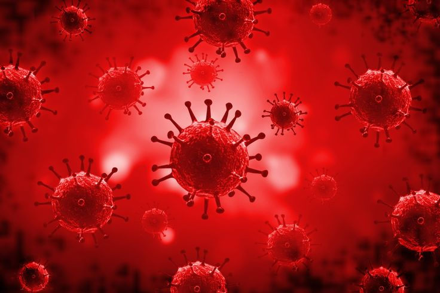
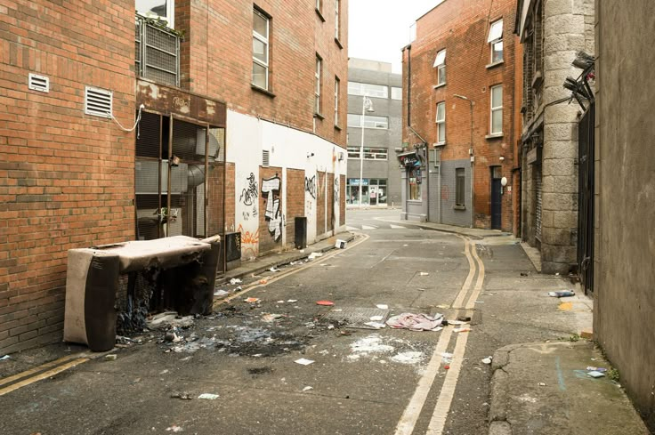
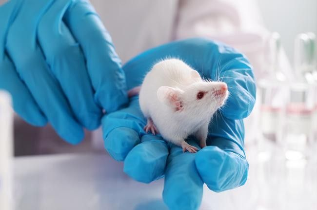
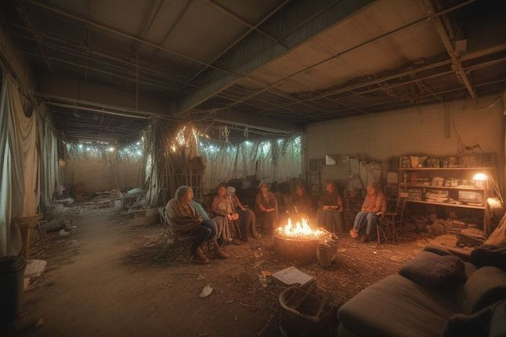
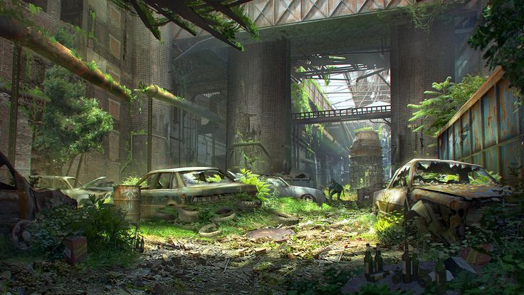

How the Dead Walked
The dark tale of humanity’s collapse
It began with curiosity, greed, and desperation. In high-security laboratories hidden from public view, scientists pushed the limits of genetic engineering and viral therapy. They sought a cure for the world's deadliest diseases — but in their ambition, they underestimated the power of the unknown.
The First Outbreak

The initial breach happened quietly. A single lab technician ignored protocol and became patient zero. At first, symptoms mimicked a severe flu: fever, nausea, disorientation. But within 48 hours, the infection rewired the brain, stripping away empathy, fear, and reason. The first undead awoke — relentless, violent, and unstoppable.
Attempts to contain the infection were futile. Quarantine zones failed. Emergency response teams were overrun. Panic spread faster than the virus. Entire towns vanished overnight, leaving only bloodstains and screams.
Mutation & Adaptation
The virus evolved with terrifying speed. It adapted to human hosts, environmental conditions, and even predator patterns. Survivors reported strange behaviors: undead avoiding traps, hunting in packs, and sometimes using rudimentary problem-solving skills. It became clear that this was not just an illness — it was an intelligent predator.
Transmission was horrifyingly easy: a single scratch, a bite, or contact with contaminated surfaces could trigger the infection. Entire communities became incubators for the rapidly spreading plague.
The Collapse of Civilization
Governments fell within weeks. Cities burned as chaos reigned. Military forces tried to enforce order but were overwhelmed. Survivors became refugees in their own lands, fleeing to remote areas or fortified compounds. Communication networks failed. Supply chains collapsed. Humanity’s once-great cities turned into hunting grounds for the undead.
Desperation bred both heroism and horror. Communities formed and fell. Some survivors banded together to reclaim pockets of land; others succumbed to greed, violence, or despair.
The Mutation Beyond Humans
Scientists warned that the virus could jump species. It didn’t take long. Wild animals — dogs, birds, even larger predators — became carriers. Entire forests and rural regions turned into deadly zones. Travelers reported packs of infected animals coordinating attacks alongside human undead. Nature itself seemed to rise against the living.
Survival became a matter of skill, adaptability, and luck. Knowledge, often taken for granted, was now the most valuable commodity. Those who couldn’t adapt were quickly eliminated.
The Rise of Survivor Societies
Out of chaos, small communities of survivors began to form. Some fortified towns using salvaged materials. Others became nomadic groups, constantly moving to avoid hordes. Leadership was earned through skill and resourcefulness. Cooperation became essential, as the old world’s conveniences no longer existed.
These groups developed new rules: rationed food, shared duties, watch shifts, and emergency signals. Communities without structure fell quickly. Those who endured learned the deadly lesson that every decision could be the difference between life and death.
The New World
The world as it once was no longer exists. Forests have overtaken suburbs. Cities stand as monuments to human hubris. The infected roam unchecked, a constant reminder of humanity’s failure to control the very tools it created. Yet, hope persists. Survivors still adapt, fight, and rebuild — one day at a time.
Tip: Trust is earned, not given. Every encounter could change the course of your survival story.